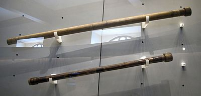
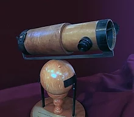
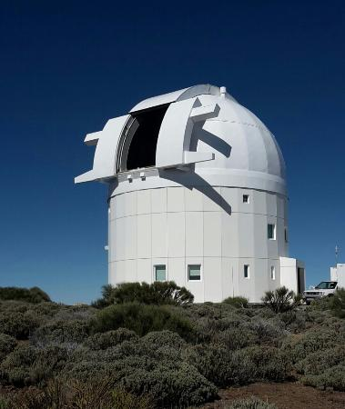
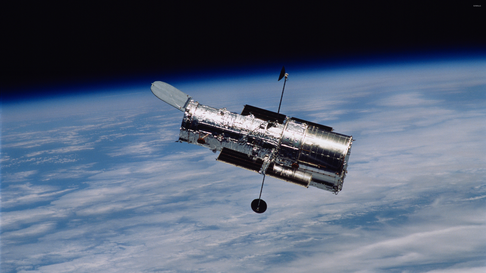

Les telescopes sont des instruments optiques permettant d'observer, en autre, tout le cosmos au-delà du ciel. Il y a 4 types de telescopes:
La lunette astronomique
Le telescope réfracteur
L'observatoire
Le telescope spatial
   